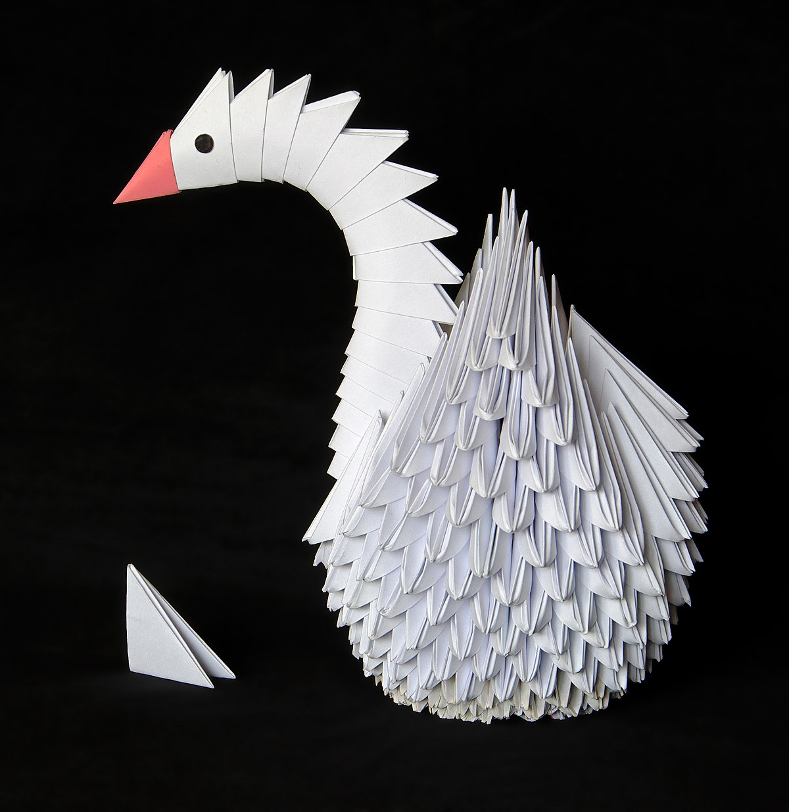
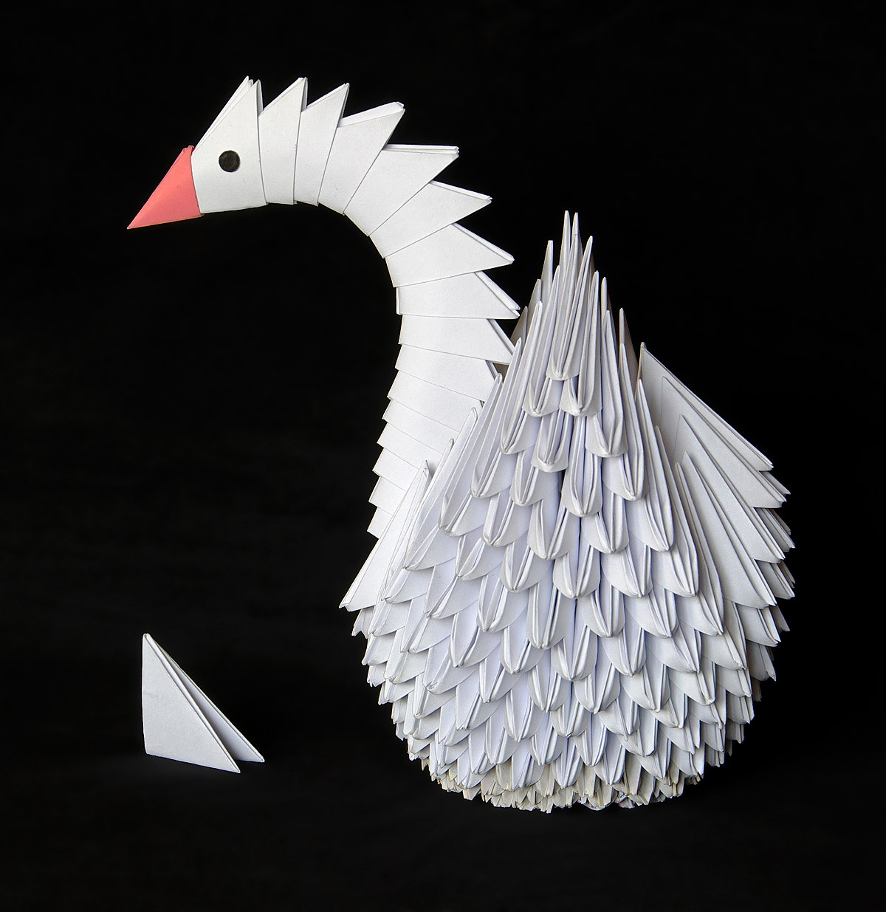

Origami is a unique form of art that has been used all around the world. Origami consists of the folding and cutting of paper to make beautiful scultptures. This art-from was originally developed in Japan after paper was brought there from China by Bhuddist monks. Origami has many common day references in literature, such as in the book Sodoku and the 1000 paper cranes, and the Origami Yoda series. Origami is usually taught briefly in art programs in most schools, and is a facinating peice of art made by another culture.
 
